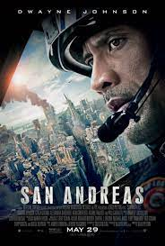

SHAFT:Shaft is a 2019 American action comedy film film directed by Tim Story and written by Kenya Barris and Alex Barnow. The film stars Samuel L. Jackson, Jessie T. Usher, Regina Hall, and Richard Roundtree. It is the fifth film in the Shaft series and a direct sequel to the 2000 film with the same titl
THE BATMAN:Batman ventures into Gotham City's underworld when a sadistic killer leaves behind a trail of cryptic clues. As the evidence begins to lead closer to home and the scale of the perpetrator's plans become clear, he must forge new relationships, unmask the culprit and bring justice to the abuse of power and corruption that has long plagued the metropolis

SAN ANDREAS:Following a massive earthquake, Ray, a rescue-chopper pilot, and his estranged wife try to find and save their daughter before another disaster strikes.